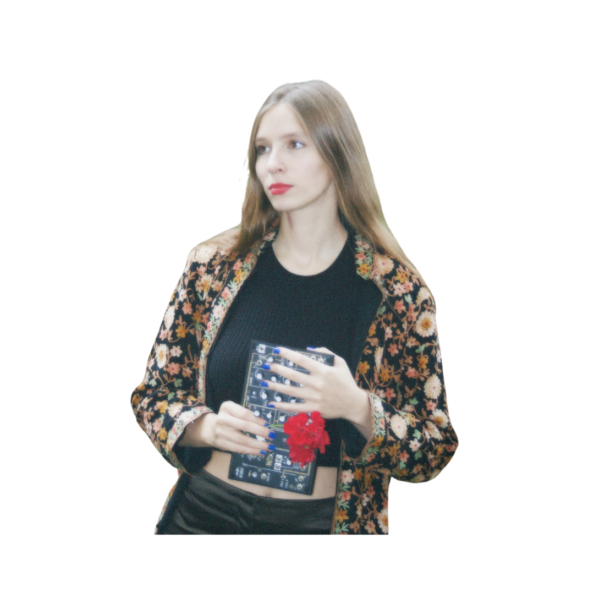

Sofia Zaiceva aka sofi is a multidisciplinary sound artist and performer who actively uses modern music technologies such as creative audio coding, ambisonics, live improvisation with modular synthesizers and code and live sound manipulation.
Sofia has Bachelor's degree in classical piano performance from Latvian Academy of Music, Bachelor's degree in electroacoustic composition from Estonian Academy of Music and Theatre (with Erasmus+ experience in the Antwerp Music Conservatory) and she is currently pursuing her Masters degree in music technology at Sibelius Academy of Music in Helsinki, Finland.
Sofia focuses on creating performances inspired by deep listening as well as producing electroacoustic music. Her artistic vision revolves around utilising sound as a malleable entity to evoke associations and alter perception. Sofia also actively performs as a DJ and as a part of experimental electronic music duo ”flowerpower”. Sofia has been an active artist on Baltic scene, participating in such esteemed festivals as “Skaņu Mežs” in Riga, Latvia, “Ule Heli ”, “COMMUTE #5” and “The Dark Side of The Moon” in Talinn, Estonia, “Sola” festival in Helsinki, Finland, "ABOUT BLANK" club in Berlin, Germany etc..